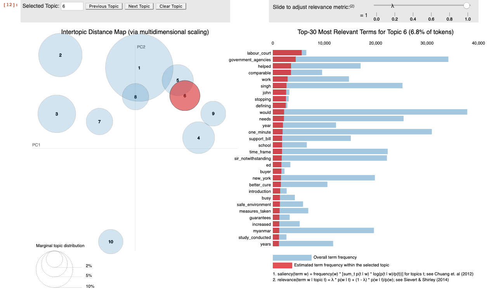

This is the forth of a multi part series that details the processes behind FastParliament . You may view the previous post here :
Table of Contents
Motivation
While topic modeling is not a visible element behind FastParliament, it allows us to derive insights from our corpus that would otherwise not be apparent.
For example, you may be curious to know how discussion topics trend against time, or even ask Is there a special time of the month when parliamentarians discuss on certain key topics?
Now I hope I sparked something in you to best appreciate why this topic modeling thing is interesting!
Quick Recap : The State of Our Corpus
FastParliament has a document store of around 10,000 documents. Now, that may not be much but imagine if you tasked to “find out what parliamentarians talk about”.
How might you begin? Well, you could be adventurous and read all 10,000 documents, look out for certain keywords and then slowly group those like minded documents together. Or… you could be like this guy:
Introducing Latent Dirichlet Allocation (LDA)
Taken from wikipedia :
In natural language processing, latent Dirichlet allocation (LDA) is a generative statistical model that allows sets of observations to be explained by unobserved groups that explain why some parts of the data are similar. For example, if observations are words collected into documents, it posits that each document is a mixture of a small number of topics and that each word’s presence is attributable to one of the document’s topics.
Let’s unpack that.
First, let’s define the word topic. A topic is simply a distribution of words. The topic MONEY will likely contain words related to money such as dollars, cents and taxes. Take note that there is no semantical meaning behind the words. Topics are merely probabilistic co-occurances of those words. Also, topic naming in itself is a supervised approach. It is supervised in the sense that an actual human has to step in to give meaning to the distribution of words.
Next, we generally assume that each document is a mixture of topics and it follows that the distribution of topics follows a probabilistic model.
Beyond this description, I am not going to delve too much in specifics as the equations that define the probabilistic distribution of topic, words and documents can be somewhat unwieldy.
Walkthrough - Applying LDA
In this section I will be showing how LDA was applied for our corpus. This follows very closely to the tutorials suppled by Gensim.
Additionally, we also used pyLDAVis to visualise the topic distribution and also show the histogram of words for a particular topic.
1. Import Libraries
import numpy as np
import pandas as pd
from datetime import date
import matplotlib.pyplot as plt
import seaborn as sns
import pyLDAvis.gensim
import pyLDAvis
import pymongo
from tqdm import tqdm
import gensim
from gensim.utils import simple_preprocess
from nltk.corpus import stopwords
from bson.json_util import dumps
2. Create Processing Functions
# Create stopwords
stop_words = stopwords.words('english')
# Convert Sentences to words
def sent_to_words(sentences):
for sentence in sentences:
yield(gensim.utils.simple_preprocess(str(sentence), deacc=True)) # deacc=True removes punctuations
# Remove Stopwords
def remove_stopwords(texts):
return [[word for word in simple_preprocess(str(doc)) if word not in stop_words] for doc in texts]
# Generate Bigrams from text
def bigrams(words, bi_min=15, tri_min=10):
bigram = gensim.models.Phrases(words, min_count = bi_min)
bigram_mod = gensim.models.phrases.Phraser(bigram)
return bigram_mod
# Combine preprocessing techniques and incorporate bigrams to generate corpus, vocabulary(bigram) and dictionary(id2word).
def get_corpus(df):
words = list(sent_to_words(df.cleaned_join))
words = remove_stopwords(words)
bigram_mod = bigrams(words)
bigram = [bigram_mod[review] for review in words]
id2word = gensim.corpora.Dictionary(bigram)
id2word.filter_extremes(no_below=10, no_above=0.35)
id2word.compactify()
corpus = [id2word.doc2bow(text) for text in bigram]
return corpus, id2word, bigram
train_corpus, train_id2word, bigram_train = get_corpus(mongo_df)
3. Train LDA Model
We use the ldamulticore function to be able to utilise more cores to generate our model. We then save the model so we can reuse it for future.
import warnings
import logging # This allows for seeing if the model converges. A log file is created.
logging.basicConfig(filename='lda_model.log', format='%(asctime)s : %(levelname)s : %(message)s', level=logging.INFO)
with warnings.catch_warnings():
warnings.simplefilter('ignore')
lda_train = gensim.models.ldamulticore.LdaMulticore(
corpus=train_corpus,
num_topics=10,
id2word=train_id2word,
chunksize=100,
workers=5, # Num. Processing Cores - 1
passes=50,
eval_every = 1,
per_word_topics=True)
lda_train.save('lda_train.model')
4. Coherence Scores and Tuning
While there can be a multitude of ways to assess the coherence of a model, $$C_v$$ is used in FastParliament which is a combination of two other coherence measure. More details can be found here .
A function compute_coherence_values, which is from this
great
resource by datascience+ is used for the subsequent evaluation of our coherence scores. It is paired with the CoherenceModel in Gensim to obtain the scores.
from gensim.models import CoherenceModel
def compute_coherence_values(dictionary, corpus, texts, limit, start=2, step=3):
"""
Compute c_v coherence for various number of topics
Parameters:
----------
dictionary : Gensim dictionary
corpus : Gensim corpus
texts : List of input texts
limit : Max num of topics
Returns:
-------
model_list : List of LDA topic models
coherence_values : Coherence values corresponding to the LDA model with respective number of topics
"""
coherence_values = []
model_list = []
for num_topics in range(start, limit, step):
model = gensim.models.ldamulticore.LdaMulticore(
corpus=corpus,
num_topics=num_topics,
id2word=train_id2word,
chunksize=1000,
workers=5, # Num. Processing Cores - 1
passes=50,
eval_every = 1,
per_word_topics=True)
model_list.append(model)
coherencemodel = CoherenceModel(model=model, texts=texts, dictionary=dictionary, coherence='c_v')
coherence_values.append(coherencemodel.get_coherence())
return model_list, coherence_values
As you can see, this function takes in the scores, at spits out a list of scores with respect to the number of topics defined.
However, it should be noted that each time the model instance is called to generate the LDA model, the values are stochastically determined. As such, it may not be a highly accurate method of accessing coherence, but it largely serves our purpose.
# run
model_list, coherence_values = compute_coherence_values(dictionary=train_id2word,
corpus=train_corpus, texts=bigram_train, start=5, limit=40, step=2)
Visualizing our coherence scores over number of topics
import matplotlib.pyplot as plt
%matplotlib inline
# Show graph
limit=40; start=5; step=2;
x = range(start, limit, step)
plt.plot(x, coherence_values)
plt.xlabel("Num Topics")
plt.ylabel("Coherence score")
plt.legend(("coherence_values"), loc='best')
plt.show()
5. Visualising our LDA Model
We then use pyLDAVis, which is a great port of the LDAvis library from R, to visualize our topics and the words distribution within the topic.
## Visualise our model
pyLDAvis.enable_notebook(sort=True)
vis = pyLDAvis.gensim.prepare(lda_train, train_corpus, train_id2word)
pyLDAvis.display(vis)
Due to iframe limitations, I’m not able to squeeze it in this post, but you may view the visualisation here . However, here is a screenshot:

6. Assigning Topic Terms to Topics
After that is all said and done, we move on to assigning the terms to each topic.
In this iteration of modeling, we print out the top 20 words associated to a topic.
for idx, topic in lda_train.print_topics(-1, num_words=20):
print("{}. Topic: {} \n\t- Key Words: {}".format(idx+1, idx, (",".join(re.sub(r'\d.\d+\*','',topic).replace('"','').split('+')))))
1. Topic: 0
- Key Words: water , nea , public , residents , town_councils , food , ensure , town_council , ministry , areas , year , use , pub , sir , health , management , buildings , resources , measures , would
2. Topic: 1
- Key Words: new , companies , government , industry , help , services , support , sector , businesses , smes , business , technology , continue , develop , local , example , growth , opportunities , development , need
3. Topic: 2
- Key Words: saf , mas , defence , countries , asean , international , us , security , training , year , financial , foreign , region , ns , mindef , banks , china , financial_institutions , continue , investment
4. Topic: 3
- Key Words: students , education , schools , school , community , moe , children , support , programmes , parents , teachers , sports , learning , programme , work , arts , help , year , training , provide
5. Topic: 4
- Key Words: hdb , lta , new , flats , would , time , residents , public_transport , flat , year , one , housing , road , operators , commuters , transport , system , development , first , sir
6. Topic: 5
- Key Words: police , public , officers , cases , security , safety , home_affairs , number , ministry , community , measures , order , would , crime , act , ensure , take , offence , work , home_team
7. Topic: 6
- Key Words: care , children , support , help , patients , health , family , need , families , singaporeans , healthcare , community , medical , services , parents , elderly , scheme , seniors , provide , child
8. Topic: 7
- Key Words: people , government , one , would , singaporeans , us , think , must , need , even , sir , time , said , want , like , first , know , make , good , society
9. Topic: 8
- Key Words: workers , government , help , companies , work , singaporeans , jobs , budget , employers , would , need , year , one , support , scheme , time , sir , economy , employment , new
10. Topic: 9
- Key Words: bill , act , would , law , case , court , legal , amendments , public , section , cases , sir , make , first , members , time , made , person , one , ensure
Accordingly, we can label the 10 topics as follows:
- Topic: 0 - Environment
- Key Words: water , nea , public , residents , town_councils , food , ensure , town_council , ministry , areas
- Topic: 1 - Business
- Key Words: new , companies , government , industry , help , services , support , sector , businesses , smes
- Topic: 2 - External Security
- Key Words: saf , mas , defence , countries , asean , international , us , security , training , year
- Topic: 3 - Education
- Key Words: students , education , schools , school , community , moe , children , support , programmes , parents
- Topic: 4 - Living
- Key Words: hdb , lta , new , flats , would , time , residents , public_transport , flat , year
- Topic: 5 - Internal Security
- Key Words: police , public , officers , cases , security , safety , home_affairs , number , ministry , community
- Topic: 6 - Healthcare
- Key Words: care , children , support , help , patients , health , family , need , families , singaporeans
- Topic: 7 - Society
- Key Words: people , government , one , would , singaporeans , us , think , must , need , even
- Topic: 8 - Employment
- Key Words: workers , government , help , companies , work , singaporeans , jobs , budget , employers , would
- Topic: 9 - Law
- Key Words: bill , act , would , law , case , court , legal , amendments , public , section
7. Appending our Corpus with Tags!
Given that we now know what topic numbers refer to what topics, we will then assign a topic to each document. The dominant topic (highest probability) will be assigned.
For a particular document :
## Access document at index 1 and obtain list of tuples where each topic is the index of the topic and the score.
row = model[train_corpus][1]
## Sort probabilities in descending order
row = sorted(row[0], key=lambda x: x[1], reverse=True)
[(7, 0.43655953),
(2, 0.17807838),
(0, 0.13052306),
(9, 0.09896996),
(5, 0.058110144),
(1, 0.054801296),
(4, 0.042660255)]
We then create a function to show us the score of each dominant topic in a document
def format_topics_sentences(ldamodel=model, corpus=train_corpus,texts=bigram_train):
# https://www.machinelearningplus.com/nlp/topic-modeling-gensim-python/
# Init output
sent_topics_df = pd.DataFrame()
# Get top 3 topic in each document
for i, row in enumerate(ldamodel[corpus]):
row = sorted(row[0], key=lambda x: x[1], reverse=True)
# Get the Dominant topic, Perc Contribution and Keywords for each document
for j, (topic_num, prop_topic) in enumerate(row):
if j == 0: # => dominant topic
wp = ldamodel.show_topic(topic_num)
topic_keywords = ", ".join([word for word, prop in wp])
sent_topics_df = sent_topics_df.append(pd.Series([int(topic_num), round(prop_topic,4), topic_keywords]), ignore_index=True)
else:
break
sent_topics_df.columns = ['Dominant_Topic', 'Perc_Contribution', 'Topic_Keywords']
# Add original text to the end of the output
contents = pd.Series(texts)
sent_topics_df = pd.concat([sent_topics_df, contents], axis=1)
return(sent_topics_df)
df_topic_sents_keywords = format_topics_sentences(ldamodel=model, corpus=train_corpus, texts=bigram_train)
# Format
df_dominant_topic = df_topic_sents_keywords.reset_index()
df_dominant_topic.columns = ['Document_No', 'Dominant_Topic', 'Topic_Perc_Contrib', 'Keywords', 'Text']
# Show
df_dominant_topic.head(10)
| Document_No | Dominant_Topic | Topic_Perc_Contrib | Keywords | Text | |
|---|---|---|---|---|---|
| 0 | 0 | 7.0 | 0.4911 | people, government, one, would, singaporeans, ... | [proc_text, debate_resumed, proc_text, br_mr, ... |
| 1 | 1 | 7.0 | 0.4366 | people, government, one, would, singaporeans, ... | [mr_vikram, nair_asked, minister, foreign_affa... |
| 2 | 2 | 5.0 | 0.3280 | police, public, officers, cases, security, saf... | [assoc_prof, walter_theseira, asked_minister, ... |
| 3 | 3 | 0.0 | 0.2807 | water, nea, public, residents, town_councils, ... | [ms_irene, quay_siew, ching, asked_minister, h... |
| 4 | 4 | 7.0 | 0.3995 | people, government, one, would, singaporeans, ... | [mr_lim, biow_chuan, asked_deputy, prime_minis... |
| 5 | 5 | 6.0 | 0.4204 | care, children, support, help, patients, healt... | [mr_louis, ng_kok, kwang_asked, minister, heal... |
| 6 | 6 | 7.0 | 0.3054 | people, government, one, would, singaporeans, ... | [mr_png, eng_huat, asked_deputy, prime_ministe... |
| 7 | 7 | 8.0 | 0.2996 | workers, government, help, companies, work, si... | [mr_louis, ng_kok, kwang_asked, minister_manpo... |
| 8 | 8 | 3.0 | 0.5370 | students, education, schools, school, communit... | [ms_irene, quay_siew, ching, asked_minister, e... |
| 9 | 9 | 7.0 | 0.4994 | people, government, one, would, singaporeans, ... | [proc_text, resumption_debate, question, may, ... |
By focusing only on adding the dominant topic to our dataframe, we then create a function called retrieve_dominant_topic.
def retrieve_dominant_topic(doc, model=model ,ref_dict=lda_dict, threshold=0.1):
doc_bow_sample = ref_dict.doc2bow(doc.split()) #input has to be a list of strings
highest_prob = sorted(model.get_document_topics(doc_bow_sample),key=lambda x : x[1], reverse=True)[0][1]
if highest_prob > threshold:
topic_num = sorted(model.get_document_topics(doc_bow_sample),key=lambda x : x[1], reverse=True)[0][0]
else:
topic_num = 11 # no topic identidied
return topic_num
We then use pandas .map() function to map each topic to each row of our document corpus.
%time mongo_df['dominant_topic'] = mongo_df.cleaned_join.map(lambda x : retrieve_dominant_topic(x))
By defining the dominant_topic_mappings dictionary, we then map the numbers to the actual strings that define the topic id.
dominant_topic_mappings = {
0 : 'Environment',
1 : 'Business',
2 : 'External Security',
3 : 'Education',
4 : 'Living',
5 : 'Internal Security',
6 : 'Healthcare',
7 : 'Society',
8 : 'Employment',
9 : 'Law',
11 : 'Unidentified'
}
mongo_df['dominant_topic'] = mongo_df['dominant_topic'].map(dominant_topic_mappings)
8. Visualising our Topic Distributions
With each document having the dominant_topic label, we then moved to visualise it.
sns.catplot(x='dominant_topic',kind="count",data = mongo_df,height=5, aspect=3 )
Now that we have gotten our topics, we then try to answer our initial question :
How have topics changed over time?
In the example below, I chose Education as a topic. In this visualisation, we are looking at how the topic trends vary across the months of the year. Accordingly, the intensity of the line hue reflects more recent years
topic = "Education"
plt.figure(figsize=(20,10))
ax = sns.relplot(x="month", y="topic_count", hue="year", kind = "line", data=topic_groupings_count[topic_groupings_count['dominant_topic'] == topic],aspect=2)
plt.title(topic)
plt.figure(figsize=(20,10))
ax = sns.lineplot(x="year", y="topic_count", hue="dominant_topic", data=topic_groupings_count)
plt.setp(ax.collections, alpha=0)
Thanks for following through with this entire post! I hope you came away with more understanding on the capabilities of LDA as well as various visualization methods.
Till next time!